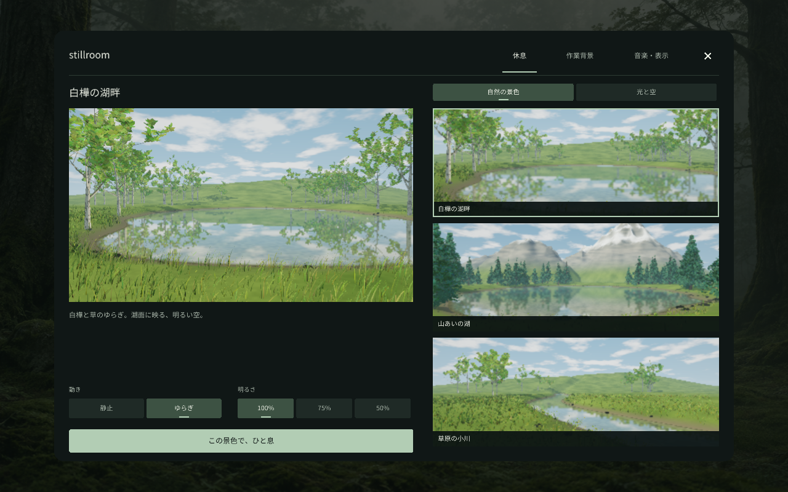

A SMALL WINDOWS LISTENING ROOM
A quiet place
to begin.
Music plays and the controls slip out of the way.
When you need a pause, click into a gently moving scene.
Download for Windows ↓
Windows x64 · Local playback · Free and open source
 Birch lake. Terrain, plants, water and wind generated locally from code.
Birch lake. Terrain, plants, water and wind generated locally from code.
Sound without a search
Four procedural scores are built in. Or choose a folder of your own music. Shuffle and gentle transitions keep it playing.
A still screen for work
Choose a plain color, a quiet wallpaper or your own image. It stays still until you choose something else. Fullscreen on a spare display, or a small window.
A scene for a pause
Three landscapes of trees, grass and water, plus eight scenes of light and sky. Set motion and brightness first. During rest, simply look; click or Esc returns to work.

A large preview, two clear collections, and direct choices for motion and brightness.
Extract. Open. Settle in.
Open stillroom.exe from the extracted ZIP. Choose a scene under Settings → Rest, then click the background or press R. Click or Esc leaves rest. While working, Space pauses music and N skips a track.
Written in Haskell, with local settings and English/Japanese controls. No account, network requests or analytics.
Read the short guide →